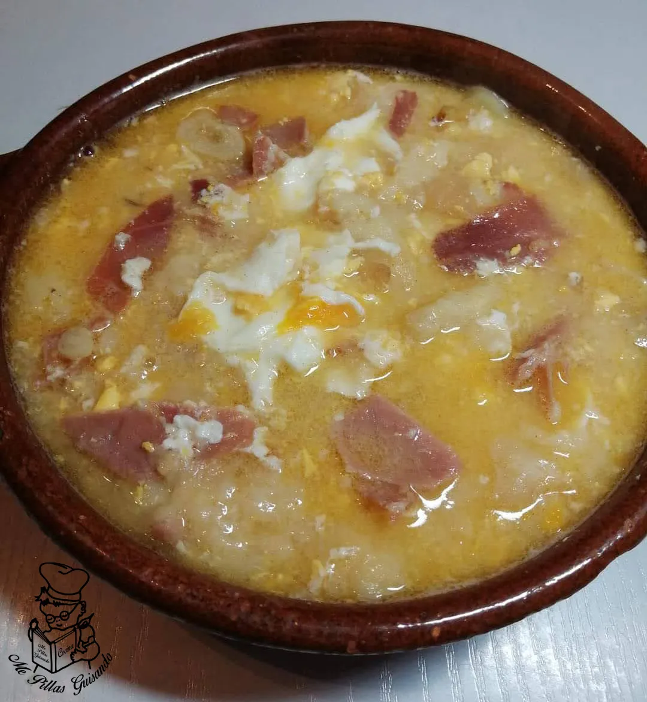

Pueblos Blancos
Historia, naturaleza y tradición
En esta página hablo sobre algunos pueblos blancos de Cádiz y su gastronomía. También incluyo varias recetas típicas y un formulario de contacto.
Historia, naturaleza y tradición

Sabores auténticos de la Sierra